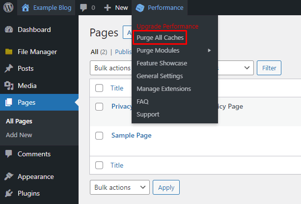

Lorsqu’on développe un thème WordPress, bien qu’il soit possible de modifier directement les fichiers de modèles PHP (templates), le fichier main.js ou style.css, il arrive parfois que les changements n’apparaissent pas immédiatement sur la page, même après avoir actualisé celle-ci dans le navigateur. Pourquoi ? À cause de la mémoire cache, plus couramment appelée la cache.
La cache du navigateur côté client (local) est une mémoire réservée au stockage des informations, des pages ou des fichiers fréquemment utilisés. Il permet à votre navigateur de ne pas avoir à charger ces derniers à chaque accès, ce qui accélère ainsi leur affichage.
Pour vider votre cache selon le navigateur, vous pouvez consulter la ressource ci-compte:
En bref, la cache est un emplacement de stockage qui permet la collecte de données temporaires de votre site côté serveur dans le but d’accélérer leur chargement lors d’une requête SQL ultérieure. Lorsqu'on développe, si on ne voit pas les modifications effectuées dans le développement du thème, il peut être recommandé de vider la cache du site WordPress côté serveur. Selon l'article suivant, WordPress n'active pas l'option de vider la cache par défaut pour éviter des problèmes de performances à votre site:
Cependant, selon ce tutoriel Hostinger, on propose d'installer une extension qui vous permettra d'avoir plus de flexibilité pour gérer la cache côté serveur, donc l'ajout d,un bouton pour Vider la cache. Dans votre cas, je vous conseille W3 Total Cache.
W3 Total Cache fonctionne automatiquement en arrière-plan dès son installation. Il offre plusieurs façons de vider le cache du site. Il suffit de survoler le menu Performance dans la barre d'outils de WordPress et de cliquer sur Purger tous les caches.
Lorsqu'on est en développement d'une thème WordPress voici comment désactiver temporairement la cache du/des fichiers CSS et JS via function.php.
Pour le fichier CSS :
ajoutez:
vous devriez avoir quelques chose comme ceci :
Le résultat ressemblera à ceci dans votre HTML généré:
Pour le fichier JS :
Faites de même pour le fichier JS que vous développez et qui est chargé via function.php.
Explications
La fonction PHP time() renvoie l'heure actuelle en nombre de secondes depuis l'époque Unix (1er janvier 1970 00:00:00 GMT). Ainsi, à chaque fois que vous affichez la page, la valeur du paramètre d'URL v sera toujours différente, forçant à aller chercher la dernière version du fichier style.css, plutôt que de récupérer celui qui se trouve dans la cache.